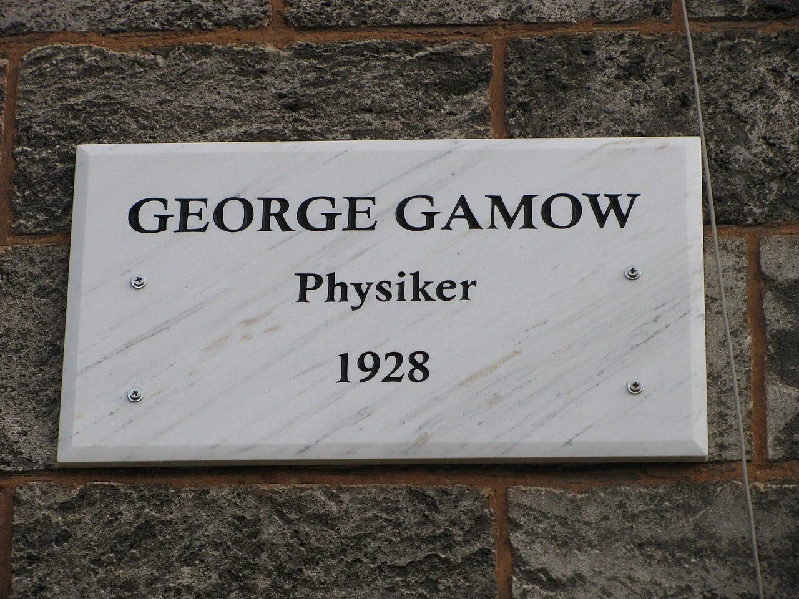
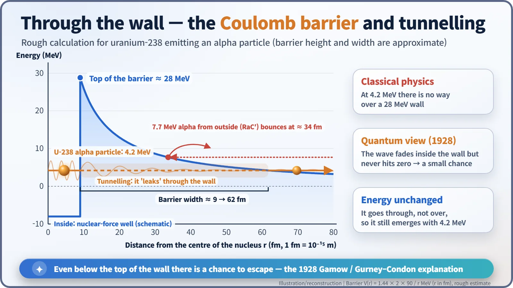
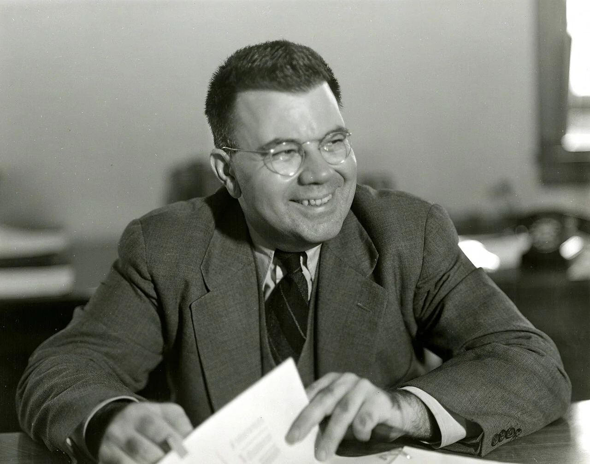
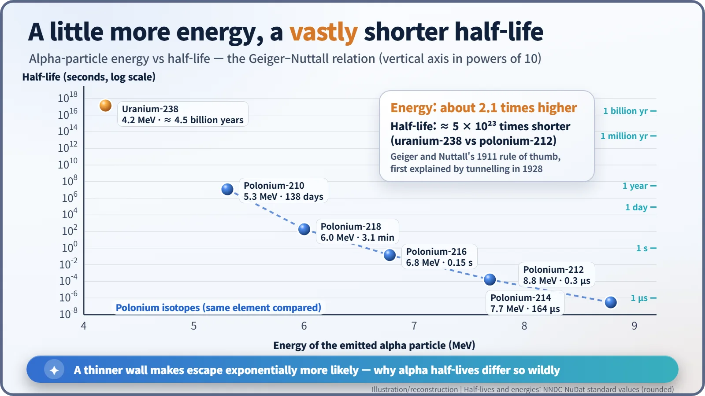

Nuclear History · 039
Weaker Than the Wall, Yet It Gets Out — Gamow, Quantum Tunnelling and Alpha Decay (1928)
Alpha particles leave uranium with far less energy than the wall around it, and in 1928 quantum mechanics showed they simply leak through.
In 1927 Rutherford found that alpha particles fired at uranium bounced off a barrier far higher than the energy of the alpha particles uranium itself emits. In summer 1928 George Gamow in Göttingen, and independently Ronald Gurney and Edward Condon at Princeton, solved the puzzle with quantum mechanics: the alpha particle does not climb over the wall but "tunnels" through it. The same idea explained why alpha half-lives range from fractions of a microsecond to billions of years.
A plaque with three lines
On an old stone wall at Herzberger Landstraße 6 in the German university town of Göttingen hangs a white marble plaque. It says almost nothing: "GEORGE GAMOW, Physiker, 1928." A name, a profession and a single year. Why 1928? Because that summer a 24-year-old Soviet physicist staying in this town solved, in a paper just nine pages long, a puzzle that had been nagging the world's best physicists. [1] [3]

The strong ball bounces off, the weak ball gets out
The puzzle belonged to Ernest Rutherford, the man who had discovered the atomic nucleus. In 1927 he fired alpha particles of about 7.7 MeV, from a polonium isotope then called "RaC′" (today's polonium-214), at uranium. An alpha particle is a helium nucleus: two protons and two neutrons bound together. Because positive charges repel each other (the Coulomb force), the alphas bounced off near the uranium nucleus exactly as expected. Uranium, it seemed, was surrounded by a high electrical "wall". [3]
But there was a catch. Uranium itself spits out alpha particles, and those carry only about 4.2 MeV — little more than half the energy of the ones that bounced off. If a hard-thrown ball cannot clear the fence from outside, how does a gently rolling ball from inside get over it? Rutherford tried an elaborate classical answer, in which the alpha particle orbits inside the nucleus as a neutral "satellite" carrying electrons, but it never really convinced anyone. [4]
There was a second mystery. In 1911 Hans Geiger and John Mitchell Nuttall had found, from experiment, that a slightly more energetic alpha particle goes with an enormously shorter half-life (the time it takes for half of the atoms to decay). Nobody could explain why. [4]
A Göttingen summer: leaking through the wall
George Gamow (1904–1968) was born in Odessa and trained in Leningrad. Arriving in Göttingen in summer 1928, he read Rutherford's paper and asked a simple question: if classical physics cannot do it, what does the brand-new quantum mechanics say?
In quantum mechanics a particle also behaves like a spread-out "matter wave". When a water wave hits a sea wall, most of it reflects, but a little seeps into the wall and dies away. If the wall is thin enough, the wave has not quite vanished when it reaches the far side. That means there is a tiny, but not zero, probability of finding the particle beyond the wall. This is quantum tunnelling.
Gamow turned the idea into a calculation. His paper "Zur Quantentheorie des Atomkernes" ("On the quantum theory of the atomic nucleus") was received by the German journal Zeitschrift für Physik on 2 August 1928. Its abstract opens (our translation from the German): "An attempt is made to investigate the processes of alpha emission more closely on the basis of wave mechanics, and to obtain theoretically the experimentally established relation between the decay constant and the energy of the alpha particles." [1]

As the figure shows, the top of the barrier at the edge of a uranium nucleus is roughly 28 MeV. At 4.2 MeV, climbing over is hopeless. But inside the nucleus the alpha particle hammers against the wall again and again, and each time it has a minute chance of slipping through. A single attempt almost always fails, yet the number of attempts is so vast that sooner or later one succeeds. And because the particle goes through rather than over the wall, it emerges with the same 4.2 MeV it had inside. No law of energy conservation is broken. [4]
Across the Atlantic, the same answer
Remarkably, at almost the same time Ronald Gurney (1898–1953) and Edward Condon (1902–1974) at Princeton University reached the same conclusion independently. Their short letter, "Wave Mechanics and Radioactive Disintegration", appeared in Nature on 22 September 1928. Fairness demands that all three be remembered together. That said, many historians credit Gamow with getting further on the quantitative side, reproducing the Geiger–Nuttall rule in formulas. [2] [3]

Double the energy, a half-life 10²³ times shorter
Tunnelling also cracked the Geiger–Nuttall mystery. A more energetic alpha particle faces a thinner stretch of wall, and the chance of getting through depends exponentially on that thickness. Uranium-238 (4.2 MeV) has a half-life of about 4.5 billion years; polonium-212 (8.8 MeV) has one of about 0.3 microseconds. The energies differ by a factor of only about 2.1, yet the half-lives differ by roughly 5 × 10²³. [5]

Doors the tunnel opened
The paper made Gamow famous almost overnight. Niels Bohr brought him to his Copenhagen institute on a Carlsberg fellowship for 1928–1929. Then, at the Cavendish Laboratory in Cambridge in 1929, Gamow ran tunnelling in reverse: a proton fired from outside could also "leak into" a light nucleus with less energy than the top of the barrier. That estimate became the spur for Rutherford to set John Cockcroft and Ernest Walton to build their accelerator. In the same year Robert Atkinson and Fritz Houtermans began using the same idea to explain nuclear reactions inside stars. [3]
With this first success on a nuclear problem, nuclear physics became both a proving ground and a stage for quantum mechanics. The odd notion that a ball weaker than the wall can still get out turned out to be simply the way nature works.